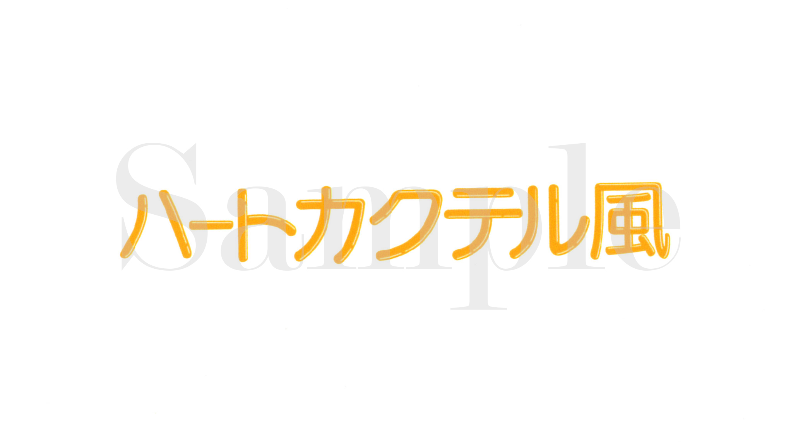
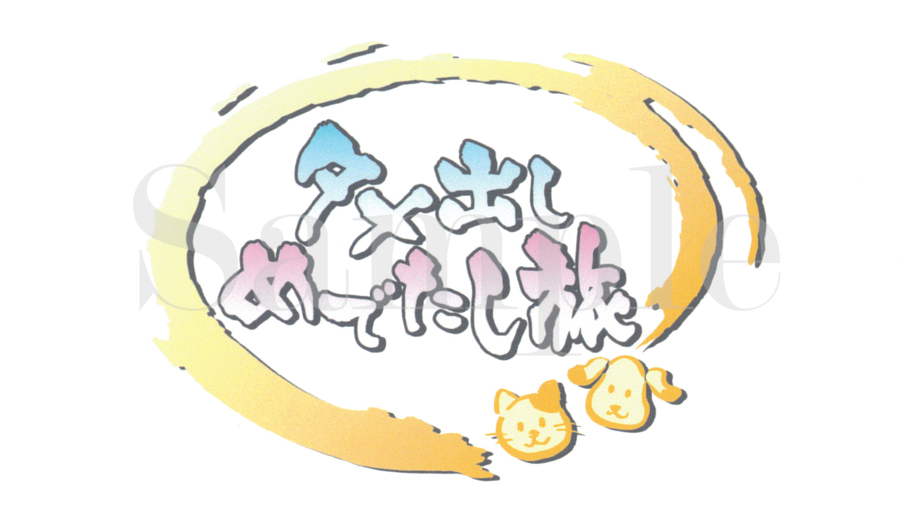

↑
TOP
TOP
2012-2016年
ロゴ・カラーテロップ
 |
ロゴ 番組ロゴ |
|---|---|
| ロゴ パロディーロゴ |
|
|  | ロゴ パロディーロゴ |
| ロゴ パロディーロゴ |
|
 |
ロゴ 番組コーナーロゴ |
|  | ロゴ 番組コーナーロゴ |
| ロゴ 番組コーナーロゴ |
|
| ロゴ 番組ロゴ |
|
 |
カラーテロップ トークテーマカラーテロップ |
 |
カラーテロップ トークテーマカラーテロップ |